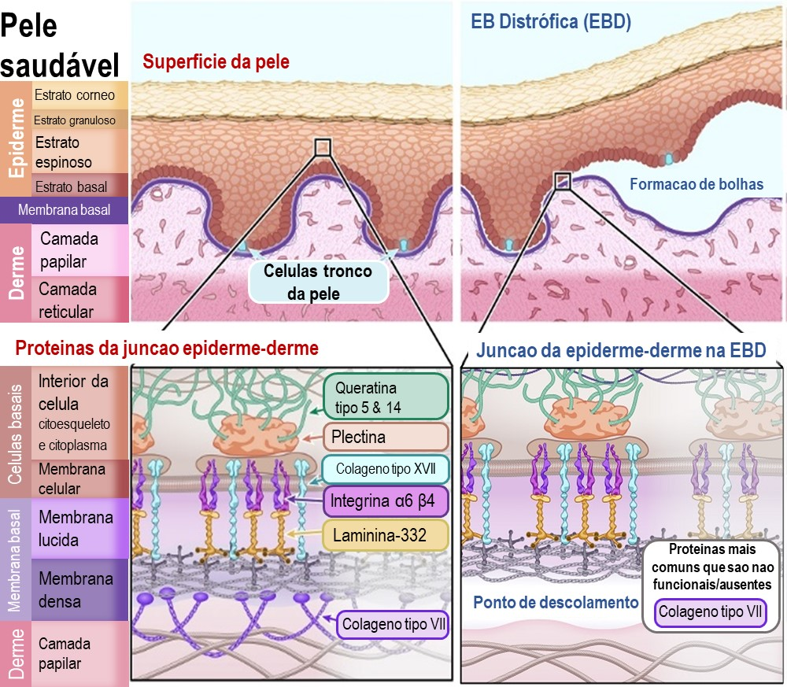
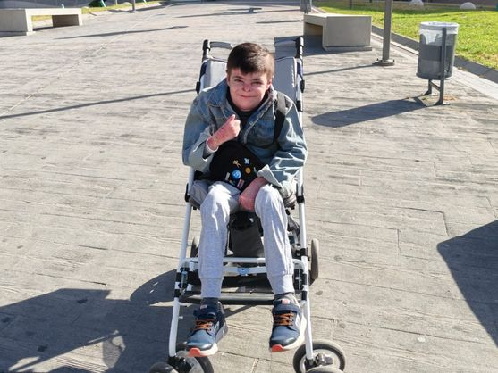
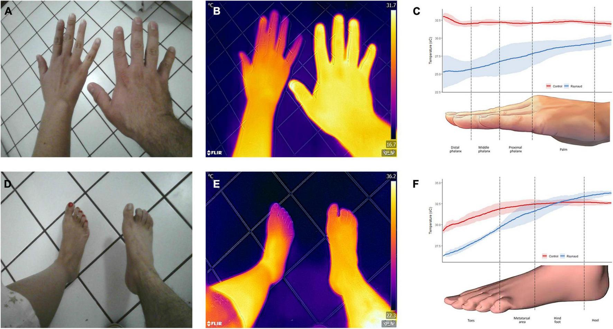

O que é a pele de mariposa?
A epidermólise bolhosa distrófica (EBD) é uma doença rara, hereditária e devastadora, causada por mutações no gene COL7A1, responsável pela produção do colágeno tipo VII (C7) — a proteína que age como "cola" entre a epiderme e a derme, formando as chamadas fibrillas de ancoragem.
Sem esse "pegamento", a pele rasga ao mínimo toque: surgem bolhas, feridas crónicas, infecções, cicatrizes contraturantes e comprometimento progressivo de mobilidade. Na variante recessiva grave (EBDR), há ausência quase completa do C7, levando a lesões espontâneas generalizadas desde o nascimento.
A EBD afeta pele e mucosas. Estima-se prevalência de 2–6 casos por milhão de nascidos vivos. Cada ferida aberta consome energia metabólica — proteínas, ferro, reservas calóricas —, compromete o crescimento e o sono, e aumenta o risco de carcinoma espinocelular cutâneo na vida adulta.
Mutação
Alteração no gene COL7A1 (cromossoma 3) impede a síntese normal do colágeno VII
Sem âncora
Fibrillas de ancoragem ausentes ou disfuncionais na junção dermo-epidérmica
Bolhas
Qualquer fricção separa epiderme da derme → bolhas subepidérmicas e erosões
Feridas crónicas
Lesões de difícil cicatrização, com risco de infeção, dor crónica e perda funcional

Leo Gutiérrez: 12 anos de luta tornados esperança
Leo é um menino sevillano de 12 anos acompanhado desde o nascimento pelo Dr. José Bernabéu, responsável pela dermatologia pediátrica do Hospital Virgen del Rocío (Sevilha, Espanha). Desde os primeiros meses de vida, apresentava lesões extensas. A ferida mais grave — localizada no tórax, de axila a axila — permaneceu aberta por 11 anos consecutivos, ultrapassando 100 cm².
"É algo inaudito, milagroso, por assim dizer. Como se fossem gotinhas de ouro."
— Lidia Soria, mãe de Leo, ao El Confidencial (junho 2026)A rotina de Leo incluía curativos diários de uma hora pela manhã e até duas horas à tarde. Cada herida aberta representava risco de infeção, dor, prurido e exsudato constante. A família lutou por acesso à terapia génica junto ao Parlamento Europeu — uma batalha de anos que se tornou símbolo da desigualdade de acesso a medicamentos inovadores em doenças raras.
O Vyjuvek não dispõe ainda de financiamento homogéneo no Sistema Nacional de Saúde espanhol. Leo foi um dos primeiros tratados via acesso especial regional. Andaluzia e Canárias aprovaram financiamento por critério médico; Castilla y León aprovou um caso. O local de residência determina, presentemente, quem pode ou não receber o tratamento.

Vyjuvek: como um vírus "bom" reprograma a pele
Vyjuvek (beremagene geperpavec, B-VEC; Krystal Biotech) é a primeira terapia génica tópica e reaplicável aprovada para a EBD. Utiliza um vírus herpes simples tipo 1 (HSV-1) modificado e inativado como vetor para transportar duas cópias funcionais do gene COL7A1 diretamente às células da pele lesionada.
Ao contrário de terapias génicas injetáveis, o Vyjuvek é aplicado topicamente — em formato de gel, em gotas espaçadas ~1 cm sobre a ferida — uma vez por semana. Não requer punção. O vírus vetor, ao entrar nas células cutâneas, entrega a cópia genética funcional, permitindo que as próprias células do paciente produzam o C7 em falta.
O HSV-1 modificado não provoca doença — atua exclusivamente como veículo de entrega génica às células cutâneas.
O gel é preparado em vial e aplicado em pequenas gotas sobre a ferida, espaçadas ~1 cm, sem necessidade de injeção. Após a aplicação, cobre-se com apósitos especiais por 24 horas (para que a pele absorva o medicamento, não o curativo). A seguir, o protocolo de curativos diários é mantido — mas com duração progressivamente menor à medida que as feridas reduzem.
Ensaio GEM-3: os números que mudaram tudo
O ensaio fase 3 GEM-3 (NCT04491604), publicado no New England Journal of Medicine em dezembro de 2022, foi um estudo aleatorizado, duplamente cego, controlado por placebo, intraindividual: cada paciente tinha feridas comparáveis tratadas com B-VEC ou placebo, em paralelo. Participaram 31 doentes com idades entre 1 e 44 anos.
Diferença absoluta a 6 meses: 45,8 pontos percentuais (IC 95%: 23,6–68,0; p=0,002). Fonte: Guide et al., NEJM 2022; NCT04491604.
FDA Aprovado em maio de 2023 nos EUA para pacientes ≥6 meses (RDEB e DDEB).
EMA Aprovação pela Comissão Europeia em abril de 2025 para doentes com mutação COL7A1, desde o nascimento.
Japão Em revisão pela PMDA; decisão prevista para o 2.º semestre de 2025.
No GEM-3, as feridas tratadas tinham tamanho máximo de 50 cm². A ferida principal de Leo ultrapassava 100 cm² — o dobro — tornando o seu caso clinicamente além dos critérios de inclusão dos ensaios. Ainda assim, a resposta observada nos primeiros dois meses é, nas palavras do Dr. Bernabéu, "a primeira vez em todos estes anos que vemos aquela lesão a reduzir-se de forma significativa".
Dois meses de tratamento: o que mudou na vida de Leo
(de ~60 para ~45 min)
(de ~2h para ~1h)
Além da redução de feridas, o Dr. Bernabéu destaca um efeito sistémico indireto fundamental: ao cessar o esforço metabólico de tentar cicatrizar feridas crónicas extensas, o organismo pode redirecionar recursos para crescimento, recuperação de massa muscular e melhoria do estado nutricional — proteínas, ferro, marcadores inflamatórios. Este efeito é ainda mais relevante em crianças pequenas e recém-nascidos.
"Se pararmos isso, começamos a melhorar todos esses parâmetros de proteínas, de ferro, que vão permitir que ele se desenvolva melhor. Se o Leo é importante, com 12 anos, imaginem um recém-nascido."
— Dr. José Bernabéu, Dermatologia Pediátrica, Hospital Virgen del RocíoDa mutação ao tratamento: uma jornada de doze anos
Nascimento de Leo
Leo nasce em Sevilha com lesões extensas já presentes. Acompanhamento iniciado com o Dr. Bernabéu desde o primeiro dia de vida.
Ferida torácica estabelece-se como crónica
A lesão de mais de 100 cm² no peito permanece aberta, tornando-se parte inevitável da rotina diária: curativos, dor, vigilância de infeções.
Ensaio GEM-3 completo; resultados publicados no NEJM
67% de cicatrização completa com B-VEC vs. 22% com placebo a 6 meses. Base científica para submissão regulatória.
Aprovação FDA (EUA)
Vyjuvek torna-se o primeiro medicamento aprovado nos EUA para EBD, incluindo variantes recessiva e dominante.
Aprovação pela Comissão Europeia
Vyjuvek aprovado na Europa para doentes com mutação COL7A1, desde o nascimento. A Espanha recebe o medicamento, mas aguarda financiamento nacional homogéneo.
Leo inicia tratamento em Sevilha
Andaluzia aprova acesso especial. Leo recebe a primeira dose no Hospital Virgen del Rocío — um dos primeiros pacientes tratados em Espanha com financiamento regional.
Ferida histórica começa a fechar
Após 7 doses semanais, a lesão torácica de 11 anos divide-se ao centro e mostra zonas de pele sã. Curativos mais curtos, menos infeções. Seis novos pacientes em preparação para tratamento no mesmo hospital.
Decisão do Ministério da Saúde espanhol
Aguarda-se financiamento nacional para garantir acesso equitativo a todos os ~300 pacientes diagnosticados em Espanha com EBD, independentemente da comunidade autónoma.
Por que este caso importa para o cuidado de feridas
A epidermólise bolhosa distrófica representa um modelo extremo de ferida crónica geneticamente determinada. O caso de Leo ilustra princípios fundamentais da ciência das feridas que se aplicam a cenários mais prevalentes:
Causa raiz
Feridas crónicas só fecham sustentavelmente quando o fator causal é endereçado. Na EBD, é genético; nas feridas do diabetes, é metabólico-vascular.
Custo metabólico
Feridas extensas consomem proteínas, ferro e calorias. O estado nutricional do paciente é inseparável da cicatrização.
Monitorização
A equipa do Virgen del Rocío usa câmeras termográficas para mapear feridas e detetar infeção precoce — tecnologia transferível ao telemonitoramento.
Qualidade de vida
Reduzir o tempo de curativos diários é tão relevante quanto reduzir a área da ferida. O cuidado centrado na pessoa inclui a agenda e o projeto de vida.
O protocolo de administração do Vyjuvek exige avaliação semanal da ferida, documentação fotográfica e identificação de sinais de infeção antes de cada dose. Este fluxo é um modelo natural para plataformas de telemonitoramento de feridas crónicas: imagens captadas por cuidadores, análise remota por especialistas, decisão clínica à distância. Tecnologias como as câmeras termográficas já integram o protocolo da equipa de Sevilha.

O que fica — e o que ainda falta
O Vyjuvek não cura a epidermólise bolhosa distrófica. Não elimina a mutação no COL7A1. Não dispensa os curativos diários. Mas, pela primeira vez na história da doença, oferece uma via biológica real para que feridas crónicas de décadas comecem a fechar.
Para Leo, isso tem o rosto de uma camiseta limpa, de sentir o vento sem dor, de curativos que duram menos tempo. Para a ciência das feridas, representa a prova de conceito de que a terapia génica tópica e reaplicável é segura, eficaz e clinicamente viável — abrindo precedente para outras dermatoses genéticas e, a prazo, para abordagens moleculares em feridas de causa adquirida.
"Que possa prescindir desse apósito no peito, que não lhe sujem as camisolas, que possa sentir esse ar — como ele diz que quer sentir o ar sem que lhe doa — isso seria milagroso."
— Lidia Soria, mãe de LeoEm Espanha, mais de 300 pacientes com EBD distrófica aguardam uma decisão nacional de financiamento. O local de residência não deveria ser o fator que determina quem tem acesso a um tratamento que pode mudar radicalmente a qualidade de vida. A equidade no acesso a terapias inovadoras para doenças raras é um desafio ético e político — não apenas científico.
Fontes e Referências
- GUIDE, S. V. et al. Trial of beremagene geperpavec (B-VEC) for dystrophic epidermolysis bullosa. New England Journal of Medicine, v. 387, n. 24, p. 2211–2219, dez. 2022. DOI: 10.1056/NEJMoa2206663.
- UNITED STATES FOOD AND DRUG ADMINISTRATION (FDA). FDA approves beremagene geperpavec-svdt (Vyjuvek) for dystrophic epidermolysis bullosa. Silver Spring: FDA, 19 maio 2023. Disponível em: fda.gov. Acesso em: 15 jun. 2026.
- EUROPEAN MEDICINES AGENCY (EMA). Vyjuvek (beremagene geperpavec): EPAR — Product information. Amsterdam: EMA, 2025. Autorização de introdução no mercado n. EU/1/25/1937. Disponível em: ema.europa.eu. Acesso em: 15 jun. 2026.
- SÁNCHEZ BECERRIL, F. Leo empieza a cerrar heridas por la terapia génica para su piel de mariposa: "Quiere sentir el aire sin que le duela". El Confidencial, Madrid, 14 jun. 2026. Disponível em: elconfidencial.com. Acesso em: 15 jun. 2026.
- SUGARMAN, J. L. et al. Revolutionary breakthrough: FDA approves Vyjuvek, the first topical gene therapy for dystrophic epidermolysis bullosa. Dermatology and Therapy, v. 13, n. 12, p. 3027–3040, dez. 2023. DOI: 10.1007/s13555-023-01044-1. PMC: PMC10718329.
- EUROGCT / EUROSTEMCELL. Epidermólise Bolhosa: como as terapias génica e celular podem ajudar? [Ilustração 4 — Diagrama de EB Distrófica]. Edinburgh: EuroStemCell, [s.d.]. Disponível em: eurogct.org/pt-pt/epidermolysisbullosa. Acesso em: 15 jun. 2026. [Figura 1 deste infográfico]
- RAMIREZ-GARCIALUNA, J. L. et al. Infrared thermography in wound care, surgery, and sports medicine: a review. Frontiers in Physiology, v. 13, p. 838528, mar. 2022. DOI: 10.3389/fphys.2022.838528. Licença CC BY. [Figura 4 deste infográfico]
- ASOCIACIÓN DEBRA ESPAÑA — PIEL DE MARIPOSA. Epidermólisis bullosa: información para pacientes y familias. Madrid: DEBRA España, [s.d.]. Disponível em: pieldemariposa.es. Acesso em: 15 jun. 2026.